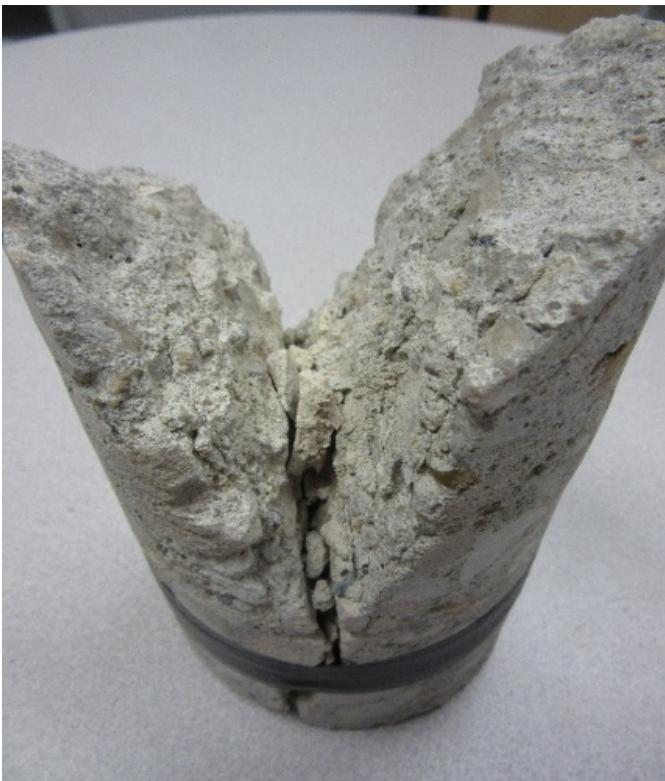
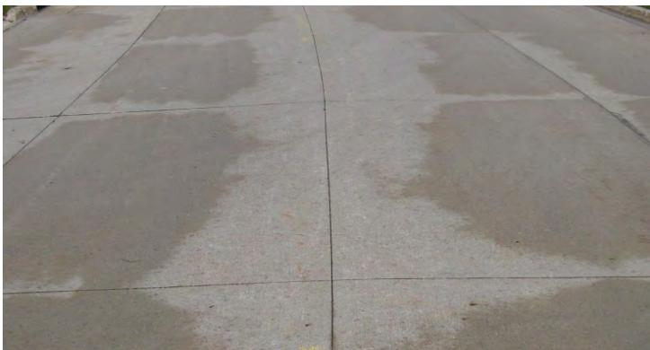
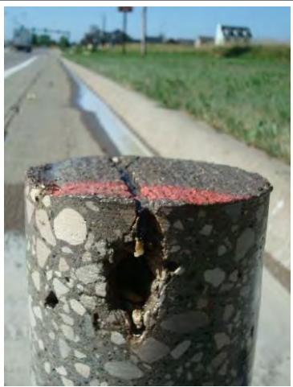
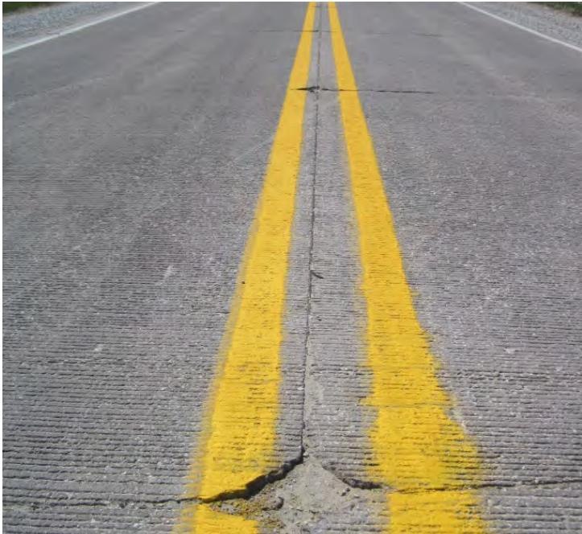
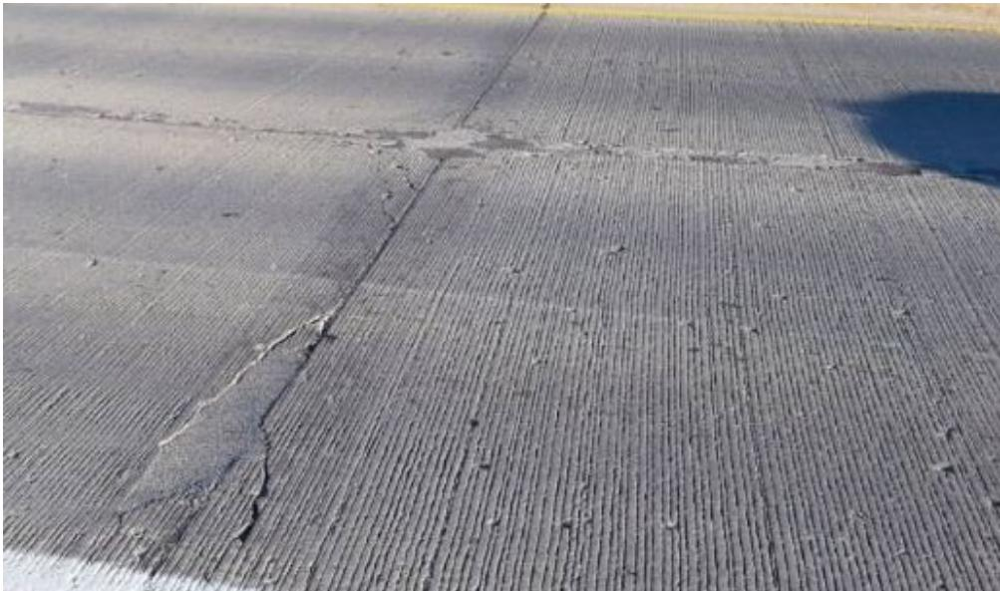
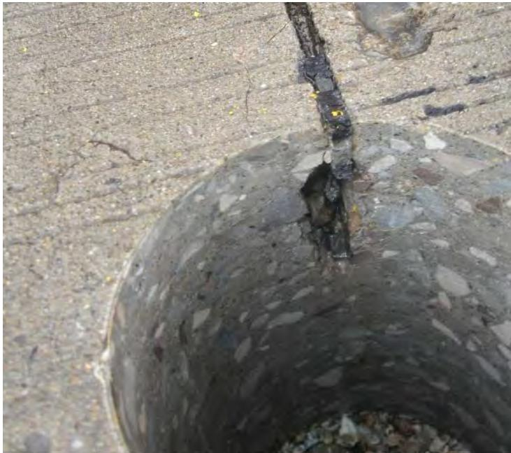
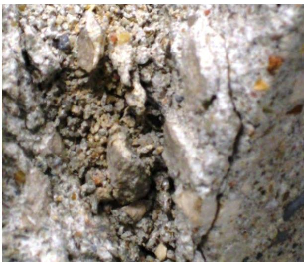
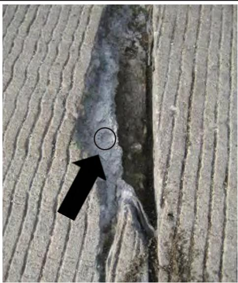
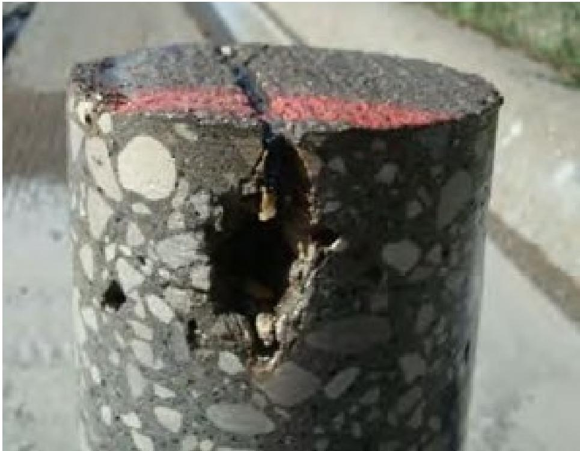

Frost-Thaw Damage to Concrete Joints
Frost‑thaw damage to concrete joints is a form of premature joint deterioration that occurs when water or deicing chemicals infiltrate the joint, become trapped, and repeatedly freeze and thaw, producing cracking, spalling, loss of paste and aggregate support, pumping, faulting, or buckling [1][2][3][4]. The distress is triggered once the joint reaches a critical degree of saturation—often compounded by low air‑entrainment (less than about 5 %) and chemical reactions with salts that form expansive oxychloride compounds—causing internal tensile stresses, tunnel‑like voids at saw‑cut bottoms, and characteristic parallel cracks spaced roughly one inch apart [1][3][4]. It typically manifests early in service (within about ten years) as shadowing or darkening a few inches on either side of the joint, fine networks of microcracks, spalling of cement paste, and secondary distresses such as loss of support, faulting, corner breaks, or even blow‑ups, especially in northern cold‑weather regions where deicing salts are applied [1][3][4].
Sources (4)
Purpose and treatment objectives
The treatment targets premature joint deterioration—cracking, spalling, loss of paste and aggregate support, pumping, faulting, or buckling—that appears early in service when water or deicing chemicals infiltrate concrete joints, become trapped, and repeatedly freeze and thaw. The distress is driven by saturation to a critical degree, often compounded by low air‑entrainment in the joint region, leading to freeze‑thaw induced damage of the paste and loss of structural performance. [1][2][3][4]
The figure below illustrates this freeze-thaw damage.

A concrete cylinder exhibiting severe freeze-thaw damage with the cement paste flaking away to expose the aggregate. [2]The image displays a cylindrical concrete specimen that has been split open, revealing significant internal deterioration where the surface material is crumbling and missing. This visual evidence demonstrates “the flaking of the paste and the loss of the damaged paste that leaves the remaining aggregate,” which characterizes freeze-thaw damage in concrete joints.
[1] — Ch. 1 (pp. 10–11), Ch. 2 (p. 12), Ch. 4 (p. 25); [2] — Ch. 4 (p. 199); [3] — Ch. 9 (pp. 237–238); [4] — 1 Why Now – What’s New? (p. 10), 2 Types and Mechanisms of Join… (pp. 10–18), Executive Summary (p. 10)
The guides agree that the chief objective in managing frost‑thaw damage to concrete joints is prevention. Across sources, the emphasis is on keeping water, deicing chemicals, and other fluids out of joints through sealing, drainage improvement, low‑permeability mixes, and proper winter maintenance so that deterioration does not begin; this preventive focus also serves to extend the pavement’s service life and provides a basis for repairing any damage that may later appear. [1][3][4]
The following figure illustrates how proper drainage contributes to this preventive strategy by managing water in unsealed joints.

Pavement surface showing differential drying patterns around unsealed joints after a rain event. [4]The image displays a concrete pavement surface with visible transverse and longitudinal joint lines separating the slabs. Darker, wet patches are present on the slab surfaces adjacent to the joints, while the joints themselves appear lighter or drier than the surrounding concrete. This visual evidence demonstrates effective drainage of unsealed joints, as water is exiting the system and the joints are drying before the rest of the slab. This observation serves as a diagnostic method to determine if there are drainage issues, which is critical for preventing frost-thaw damage by ensuring water does not remain trapped in the joint.
[1] — Ch. 1 (pp. 10–11), Ch. 4 (p. 25), Ch. 5 (p. 28); [3] — Ch. 9 (pp. 237–238); [4] — 2 Types and Mechanisms of Join… (pp. 16–18), Executive Summary (p. 10)
Distress characterization and causes
Frost‑thaw damage to concrete pavement joints is observed primarily in northern snowbelt regions and on sections where winter deicing salts are applied, such as the U.S. 20 corridor in Hamilton and Webster counties. The distress appears at transverse joints, along vibrator trails, and adjacent to joint faces, initially manifesting as “shadowing or darkening of a zone a few inches on either side of a joint.” It progresses outward from the joint face with “parallel cracks that form at approximately one‑inch increments” and later “new cracks that form an inch or so beyond the boundaries of the repair” each freeze‑thaw cycle. The extent includes visible deterioration, loss of material around aggregate, spalling, and tunnel‑like voids at the bottom of saw‑cuts caused by frozen salt solution. Severity ranges from “significant loss of material may occur” and loose aggregate filling the joint to compressive stresses that can exceed pavement strength, leading to “blowups or buckling.” The distress typically develops within about ten years of service—“premature joint deterioration (that is, generally occurring within 10 years of construction) has been noted”—indicating a relatively rapid progression. Safety and operational consequences include compromised ride quality, loss of support, faulting, corner breaks, pavement “growth” that can shift bridge abutments or other structures, and the need for major rehabilitation or maintenance interventions. [1][3][4]
The following figure illustrates this severe joint spalling.
 Concrete pavement with severe joint spalling (photo courtesy of Todd LaTorella, MO/KS ACPA) [1]
Concrete pavement with severe joint spalling (photo courtesy of Todd LaTorella, MO/KS ACPA) [1]
The image displays a concrete highway surface characterized by extensive deterioration along the transverse joints.
[1] — Ch. 1 (pp. 10–11); [3] — Ch. 9 (pp. 237–238); [4] — 2 Types and Mechanisms of Join… (pp. 12–14)
The distress observed in concrete pavement joints is fundamentally driven by moisture‑related mechanisms that are amplified by freeze–thaw cycling and chemical interaction with deicing salts. Water infiltrates the joint surface, ponded meltwater or base seepage can saturate the joint material, and when temperatures drop the trapped fluid freezes and expands, generating internal tensile stresses that crack the paste – “water is the common factor in most premature joint deterioration” and “Freezing and thawing of this trapped fluid leads to the creation of what appears to be a tunnel through the slab at the level of the bottom the saw‑cut.” Inadequate drainage, improper joint detailing, or early‑age defects such as bruising from sawing and lack of curing create zones where water is retained – “Some distresses are caused by improper joint detailing, inadequate drainage, or poor construction practices” and “bruising due to sawing of the concrete at the joints can become a zone where water is trapped.”
When the air‑void system is compromised – “loss of air at the joints and in the vibrator trails, increasing the pavements’ exposure to freeze‑thaw damage” – or when the concrete contains only moderate to low air entrainment (under about five percent) – “moderate to low air entrainment content (less than 5%)” – the mix lacks sufficient capacity to accommodate ice expansion. High moisture levels (“pavements with high moisture content (at or above a critical degree of saturation)”) push the joint beyond a critical saturation threshold, making it vulnerable to classic freeze‑thaw damage.
Deicing and anti‑icing chemicals further accelerate deterioration. Certain salts react chemically with cement paste, forming expansive oxychloride compounds – “certain deicing/ anti‑icing salts have reacted with components of the paste, resulting in a loss of material in and around the aggregate at the joint and crack face” and “chemical reactions of calcium‑ or magnesium‑chloride salts with cement paste that form expansive calcium oxychloride.” The presence of these chemicals also raises saturation because they do not dry readily – “Deicing practices currently in use appear to be increasing the degree of saturation of concrete at the joints.”
Water and deicing solutions that collect in joints or cracks can migrate beneath the slab, leading to secondary distresses such as pumping, loss of support, faulting, corner breaks, and overall concrete deterioration – “Free water and deicing chemicals that enter joints or cracks can accumulate beneath the slab… contributing to … pumping, loss of support, faulting, corner breaks, and concrete deterioration.” Base erodibility, frequent wet days, and heavy traffic loads further exacerbate erosion of underlying support, worsening joint faulting. Mechanical actions (traffic loading, D‑cracking) are secondary contributors but can create additional pathways for water ingress.
Consequently, preventing water access to the concrete – through effective drainage, low‑permeability mixes, adequate air‑void quality, proper joint detailing, and timely sealing – is essential to mitigate freeze–thaw and chemical‑induced joint distress. [1][2][3][4]
The role of air-entraining admixtures in stabilizing air voids is illustrated below.
 Diagram of air-entraining agent molecules stabilizing an air void at the water interface. [2]
Diagram of air-entraining agent molecules stabilizing an air void at the water interface. [2]
The figure depicts a large spherical void labeled “Air” surrounded by a medium labeled “Water,” with several green, rod-like structures positioned along the boundary between them. One of these structures is identified as an “Air-entraining Agent,” illustrating how such molecules orient themselves to stabilize air voids within a liquid matrix. This mechanism supports the prevention of freeze-thaw damage by maintaining adequate air content in concrete exposed to deicing chemicals or high water saturation.
[1] — Ch. 1 (pp. 10–11), Ch. 2 (p. 12), Ch. 5 (p. 28); [2] — Ch. 4 (p. 199); [3] — Ch. 9 (pp. 237–238); [4] — 1 Why Now – What’s New? (p. 10), 2 Types and Mechanisms of Join… (pp. 10–18), Executive Summary (p. 10)
Applicability and treatment selection
Across the guides, frost‑thaw damage to concrete joints is considered appropriate for jointed concrete surfaces—state highways, county roads, city streets and parking lots—in northern cold‑weather regions where “problems have been reported in several northern (cold weather) states.” The distress requires that the joints become saturated; the guides note that “concrete that is saturated with trapped water is at higher risk of failure. Such saturation is more likely in joints than at the slab surface,” and that damage occurs when there is “saturation that leads to classic freeze‑thaw damage” or when “freeze‑thaw damage when a critical degree of saturation is reached within a joint.”
The environmental context includes exposure to deicing chemicals: the guides state the joints are “being exposed to high concentrations of deicing chemicals,” and that “Deicing salts currently in use are prone to increasing the risk of saturation because they do not dry readily.” Use of alternative salts is highlighted: “alternatives to sodium chloride (NaCl) such as calcium chloride (CaCl2) and magnesium chloride (MgCl2)… have been shown to increase the saturation of the concrete at a saw cut.”
Site conditions that exacerbate the problem are described as poor drainage and marginal air‑void quality. The guides state “In most cases where shadowing is observed the system is not well drained,” and that the “air‑void system is often marginal or poor.” When the pavement rests on an unsuitable base, “When the pavement is placed on a non‑draining base and/or when the water table is above the bottom of the slab, … concrete that has been seriously damaged in the joint.” Pavements also may be “constructed on erodible bases.”
Traffic considerations vary: one source identifies “high truck‑traffic levels” as a condition that can intensify the distress, while another observation notes that “traffic loading is not specifically identified as a controlling factor,” indicating that the treatment applies regardless of traffic intensity. [1][2][3][4]
[1] — Ch. 2 (p. 12); [2] — Ch. 4 (p. 199); [3] — Ch. 9 (pp. 237–238); [4] — 1 Why Now – What’s New? (p. 10), 2 Types and Mechanisms of Join… (pp. 12–14)
Frost‑thaw damage mitigation is inappropriate when the joint area lacks adequate drainage and the air‑void system is marginal or poor, because water becomes trapped in microcracks and saw‑cuts where freezing and thawing can create tunnels through the slab. Likewise, if the pavement rests on a non‑draining base or the groundwater table sits above the slab bottom, serious hidden joint damage will develop despite an apparently sound surface, indicating that alternative measures such as improving drainage or redesigning the joint are required. In these poorly drained conditions, relying solely on frost‑thaw protection is insufficient and other maintenance or rehabilitation strategies should be employed. [4]
The figure below illustrates how saturated soils resulting from inadequate drainage can lead to visible frost damage at concrete joints.

A close-up of a concrete pavement joint exhibiting severe frost-thaw damage. [4]The image displays a vertical cross-section of a concrete slab edge where the material has suffered significant structural loss, leaving a large void and exposing the internal aggregate.
[4] — 2 Types and Mechanisms of Join… (p. 12)
Condition assessment and timing
To determine whether frost‑thaw treatment is required, a systematic field inspection is performed. The inspector first conducts a visual survey of each joint looking for “shadowing or darkening of a zone a few inches on either side of a joint,” which signals microcracks that can trap water. The presence of salt solution in saw‑cuts is noted – “If the joint does not crack out, then salt solution can collect in the saw-cut.” Drainage performance, ponding, base infiltration, and air‑void adequacy are measured and compared with adjacent sound pavement. Design and construction details are recorded to assess the concrete’s capacity to resist severe conditions. The visual findings are then supported by targeted sampling; core samples are extracted from suspect joints, especially where drainage is poor or the water table is high, and laboratory tests evaluate permeability, compressive strength, and void structure. “A field review can then be conducted and, in many cases, complemented by sampling and testing of the pavement.” The combined observations and test results pinpoint locations and severity of frost‑thaw damage, guiding remedial action. “Together, these steps will yield significant insight about the probable joint deterioration mechanisms.” [4]
The following figure illustrates how this damage typically initiates at joint intersections.

Damage starting at joint intersections [4]The image displays a concrete pavement surface with longitudinal yellow lane markings and visible transverse saw-cut joints. Significant cracking, spalling, and material loss are concentrated at the intersection of these joints. It is common to see distress starting at intersections of longitudinal and transverse saw cuts.
[4] — 2 Types and Mechanisms of Join… (pp. 12–18)
Frost‑thaw damage to concrete joints should be addressed as soon as the joint reaches a critical degree of saturation and early signs of distress become evident. The guides agree that treatment is warranted when moisture – often combined with deicing or anti‑icing chemicals – infiltrates the joint to “a critical degree of saturation” and visible degradation such as cracking, spalling, or shadowed/darkened zones appears. One source notes this typically occurs within “about ten years of construction,” especially where salts have reacted with the paste. Another emphasizes that intervention should precede more severe distresses like pumping or faulting. A further description adds that early‑life indicators include “shadowing or darkening of a zone a few inches on either side of a joint” and “localized bruising at the intersections of longitudinal and transverse saw cuts” where water‑filled microcracks trap salt‑laden moisture. At this stage the joint may still be intact, but repeated freeze–thaw cycles will soon produce tunnel‑like damage if left untreated. [1][3][4]
The following figure illustrates how this degree of saturation influences stiffness degradation due to freeze-thaw damage.
 Influence of the DOS on stiffness degradation due to freeze-thaw damage [1]
Influence of the DOS on stiffness degradation due to freeze-thaw damage [1]
The figure plots relative stiffness against the degree of saturation for concrete samples with varying air-entrainment levels.
[1] — Ch. 1 (pp. 10–11); [3] — Ch. 9 (pp. 237–238); [4] — 2 Types and Mechanisms of Join… (pp. 12–18)
Materials and repair details
Frost‑thaw damage in Iowa concrete joints is mitigated by using air‑entrained mixes, often incorporating slag cement, and by selecting durable limestone aggregate while limiting unsound materials such as shale or chert; the standard pavement design calls for a 26 ft wide slab with transverse joint spacing of 20 ft and dowel bars installed in any joint where the slab is eight inches thick or more. When premature deterioration appears—typically within ten years on salt‑treated surfaces—the guide recommends controlling vibration speed with monitoring equipment, improving workability through optimized aggregate gradations, and increasing slag cement content to restore lost air at joints and vibrator trails. Repair of damaged joints follows these same material specifications and includes reconstructing the joint using the prescribed air‑entrained mix and dowel configuration to re‑establish load transfer and extend service life. [1]
[1] — Ch. 1 (pp. 10–11)
The guides agree that frost‑thaw performance of concrete joints depends on three interrelated categories—material properties, compatibility requirements, and existing pavement conditions.
Material properties must give intrinsic resistance: adequate air‑entrainment, freeze‑thaw resistant aggregates, supplementary cementitious materials such as slag cement, and a low‑permeability matrix. The guides stress that “water is the common factor in most premature joint deterioration,” so maintaining an adequate air‑void system (typically >5 %) and limiting water‑cement ratios are essential.
Compatibility requirements focus on preserving those properties during construction and maintenance. Proper vibration monitoring, optimized aggregate gradation, careful handling to retain air voids, and the use of sealers or compatible repair materials help keep the air‑void system intact. The selection of deicing chemicals is critical; salts that react with cement paste must be avoided.
Existing pavement conditions govern whether a joint will survive repeated freeze‑thaw cycles. Joints that become saturated—especially when the degree of saturation reaches a critical level—are highly vulnerable, and poor drainage, erodible bases, high numbers of wet days, or early‑age bruising at saw cuts provide pathways for water ingress.
Across sources the following specific observations are highlighted: - “In 1952 air entrainment was required for the first time to help mitigate freeze‑thaw damage.” - “premature joint deterioration … occurred (1) in pavements with high moisture content (at or above a critical degree of saturation) and (2) where certain deicing/ anti‑icing salts have reacted with components of the paste.” - “saturated joints with moderate to low air entrainment content (less than 5%)” are prone to spalling. - “the use of certain deicing chemicals—notably calcium chloride and magnesium chloride—that react with cement paste to form the expansive calcium oxychloride.”
When material quality, compatible construction/maintenance practices, and sound existing conditions are all achieved, joint durability is maintained; deficiencies in any area accelerate frost‑thaw damage. [1][2][3][4]
The figure below illustrates how deficiencies in material quality manifest as saturated transverse and longitudinal joints with unsound aggregate.

Saturated transverse and longitudinal joints with unsound aggregate [2]The image displays a concrete pavement surface featuring intersecting saw-cut joints that exhibit significant deterioration. Visible distress includes spalling and crumbling along the joint edges, where material has broken away to expose the underlying structure. This deterioration is caused by marginal soundness of aggregate that breaks down before the design life is reached when subject to deicing under wet conditions for a number of years. The breakdown occurs due to repeated freeze-thaw cycles of wet joints over a period of 15 to 20 years.
[1] — Ch. 1 (pp. 10–11), Ch. 2 (p. 12), Ch. 5 (p. 28); [2] — Ch. 4 (p. 199); [3] — Ch. 9 (pp. 237–238); [4] — 1 Why Now – What’s New? (p. 10), 2 Types and Mechanisms of Join… (pp. 12–18), Executive Summary (p. 10)
Treatment procedures
The implementation of frost‑thaw mitigation for concrete joints is shaped by the equipment used, the limited sequencing considerations, prevailing environmental conditions, and the absence of explicit traffic restrictions. Vibration monitoring equipment is required to verify proper vibration speed and maintain adequate air content at joints, while concrete saws employed for longitudinal and transverse joint cutting can bruise the slab, creating zones that readily collect water. Sequencing constraints are minimal; the primary timing issue noted is that sawing should occur early in pavement life, but no additional construction or traffic control steps are prescribed. Environmental conditions dominate: damage accelerates when moisture availability coincides with sub‑zero temperatures, especially on non‑draining bases or where the water table lies above the slab, leading to trapped water in saw‑cuts and microcracks. Pavements with high moisture content at or above a critical degree of saturation, or those exposed to deicing/anti‑icing salts—particularly in areas that use salt during winter months—are especially prone to premature joint deterioration. Winter maintenance that removes snow and ice from the surface further reduces the risk. Across sources, no specific traffic restrictions are identified as implementation constraints. [1][4]
[1] — Ch. 1 (pp. 10–11), Ch. 4 (p. 25); [4] — 2 Types and Mechanisms of Join… (pp. 12–18)
Quality and workmanship
Inspection of concrete joints for frost‑thaw damage should be organized around four project phases—materials, preparation, installation, and the finished pavement.
Materials: Verify that the coarse aggregate is freeze‑thaw durable and free of unsound material and that the mix includes the required air entrainment and any slag cement additions. The concrete should also meet high‑quality criteria such as appropriate water‑cement ratios, a stable air‑void system, and low permeability to limit saturation.
Preparation: Confirm that the subgrade is properly graded and drained, that joint detailing (spacing, depth, sealant placement) follows design intent, and that saw‑cut faces receive adequate curing before exposure to freezing temperatures. The guides stress proper base grading and drainage provisions, correct joint detailing (spacing, depth, sealant placement), and adequate curing of saw‑cut faces before exposure to freezing conditions.
Installation: Monitor construction practices for excessive water added for workability, ensure vibration speed and control are within specifications, and verify that the type and quantity of deicing salts applied will not unduly raise joint saturation. Excessive water addition is flagged by excessive water added for workability.
Completed work: Examine the joint surface for signs of distress—dark‑shadow zones indicating microcracks filled with water, parallel cracks spaced about one inch from the joint face, loose or clean coarse aggregate, staining or carbonate deposits, and secondary ettringite deposits that reveal trapped moisture. Visual inspection should also note any thin flakes of mortar parallel to the joint face, which signal paste loss. [1][2][4]
The following figure illustrates how these distress patterns typically manifest as crescent-shaped cracks accompanied by dark staining on the pavement surface.
 Staining accompanying D-cracking at joints [2]
Staining accompanying D-cracking at joints [2]
The image displays a concrete pavement surface featuring a vertical saw-cut joint and a horizontal yellow painted line.
[1] — Ch. 1 (pp. 10–11); [2] — Ch. 4 (p. 199); [4] — 1 Why Now – What’s New? (p. 10), 2 Types and Mechanisms of Join… (pp. 12–18), Executive Summary (p. 10)
A joint is considered satisfactory when it shows no signs of water saturation, ponding on the surface, or infiltration from the base; the concrete’s permeability is kept as low as practically feasible and the in‑place air‑void system meets adequacy requirements. These conditions indicate that the joint can resist frost‑thaw cycles without deterioration. [4]
The following figure illustrates what occurs when these protective conditions are compromised, showing evidence of saturation within a joint beneath its seal.

Evidence of saturation within joint beneath seal [4]The image displays a close-up view of a concrete pavement surface featuring a longitudinal saw-cut joint filled with black sealant. A dark, wet-looking area is visible on the concrete surface immediately adjacent to and extending slightly into the joint line, indicating moisture presence.
[4] — 2 Types and Mechanisms of Join… (pp. 16–18)
Performance and service life
Frost‑thaw cycles cause loss of material at saturated joints and along crack faces, especially when deicing salts react with the paste, leading to visible joint deterioration that compromises pavement condition and load‑transfer efficiency. The guides note that when joints reach a critical degree of saturation—whether in saw cuts or regular cracks—the repeated freezing and thawing expands trapped water, creates microcracks adjacent to the joint, and can form tunnel‑like voids at the bottom of saw cuts. These mechanisms accelerate joint degradation, producing distresses such as pumping, loss of support, faulting, corner breaks, spalling, and in extreme cases blowups or buckling. The compromised joints hinder the normal opening‑closing movement of slabs, reducing load transfer efficiency and overall pavement functionality. Because the concrete matrix and underlying base are eroded, durability is diminished; factors such as higher water‑cement ratios, insufficient curing, late‑season construction, and the use of calcium or magnesium chloride salts exacerbate moisture retention and further shorten performance. Consequently, joints that might otherwise perform for many years fail prematurely, reducing structural condition, limiting traffic‑load capacity, diminishing durability, and shortening the expected service life. [1][3][4]
The figure below illustrates typical slivers resulting from these freezing and thawing cycles.

Typical slivers from freezing and thawing cycles [4]The image displays a close-up view of deteriorated concrete, revealing exposed aggregate particles embedded in a crumbling cement matrix. Visible damage includes the loss of surface material and the formation of thin flakes or slivers that appear to be peeling parallel to the exposed surface.
[1] — Ch. 1 (pp. 10–11), Ch. 2 (p. 12); [3] — Ch. 9 (pp. 237–238); [4] — 1 Why Now – What’s New? (p. 10), 2 Types and Mechanisms of Join… (p. 12)
The guides describe a consistent set of recurring distresses that develop in concrete pavement joints subjected to freeze‑thaw cycles. The most frequently observed failure is spalling of the cement paste, described as “Joint deterioration (spalling) from freeze‑thaw damage in cold weather states is attributed to saturated joints with moderate to low air entrainment content (less than 5%) and being exposed to high concentrations of deicing chemicals”, often appearing as thin flakes that run parallel to the joint face (“Typically, damage is in the paste, resulting in thin flakes of mortar that form parallel to the exposed joint face.”). Additional manifestations include “pumping, loss of support, faulting, corner breaks, and concrete deterioration”, shadowing or darkening adjacent to the joint (“shadowing or darkening of a zone a few inches on either side of a joint”), fine networks of microcracks that develop near and parallel to the joint (“fine network of microcracks that develop near and parallel to the joint”), incremental parallel cracks spaced about one inch apart (“parallel cracks that form at approximately one-inch increments”) which can coalesce into tunnel‑like voids when trapped brine freezes (“If the joint does not crack out, then salt solution can collect in the saw-cut. Freezing and thawing of this trapped fluid leads to the creation of what appears to be a tunnel through the slab at the level of the bottom the saw‑cut”), staining and carbonate deposits indicating water transport (“staining and carbonate deposits, indicating water transport through the crack, are common”), and accumulation of loose aggregate within the joint (“joint is often filled with loose aggregate”). The guides note that these distresses tend to appear early in service (“Both of these distresses occur early in the life of a pavement, so the root causes can no longer be mitigated.”)
The development of these failures is driven by two primary conditions identified across the sources. First, saturation of the joint to a critical level – expressed as “high moisture content (at or above a critical degree of saturation)”, “water is the common factor in most premature joint deterioration”, and “Concrete that is saturated with trapped water is at higher risk of failure.” – combined with inadequate air‑void protection. The guides point out “loss of air at the joints and in the vibrator trails, increasing the pavements’ exposure to freeze‑thaw damage” and note that air content below about five percent (“moderate to low air entrainment content (less than 5%)”) exacerbates vulnerability.
Second, chemical reactions between deicing agents and the cement matrix accelerate deterioration. The formation of expansive oxychloride compounds is highlighted: “the formation of oxychloride in the joint resulting from the reaction of cement with certain deicing chemicals”, “use of certain deicing chemicals—notably calcium chloride and magnesium chloride—that react with cement paste to form the expansive calcium oxychloride”, and “certain deicing/ anti-icing salts have reacted with components of the paste, resulting in a loss of material in and around the aggregate at the joint and crack face.” Current deicing practices further increase saturation (“Deicing practices currently in use appear to be increasing the degree of saturation of concrete at the joints; thus, the concrete must be higher quality to be able to resist this environment.”) and many salts “do not dry out readily”, raising the risk of trapped moisture.
Additional factors that amplify these mechanisms include improper joint detailing and inadequate drainage (“Some distresses are caused by improper joint detailing, inadequate drainage, or poor construction practices”), joint configurations that trap water (“Some joint details appear to trap water.”), placement on non‑draining bases or high water tables (“When the pavement is placed on a non-draining base and/or when the water table is above the bottom of the slab”), and construction practices that reduce air entrainment (“Reducing water access to the concrete”). The guides also warn that alternatives to sodium chloride, such as calcium chloride and magnesium chloride, “have been shown to increase the saturation of the concrete at a saw cut, which is a significant contributor to the observed joint deterioration.” [1][2][3][4]
The following figure illustrates how these conditions contribute to micro-cracking at concrete joints.
 Diagram of water infiltration and saturation in a concrete pavement joint caused by failed sealant, backer rod placement, and non-draining subbase. [2]
Diagram of water infiltration and saturation in a concrete pavement joint caused by failed sealant, backer rod placement, and non-draining subbase. [2]
The figure displays a cross-section of a concrete pavement joint containing a black circular backer rod situated within the saw cut. Blue shading indicates trapped water and saturated concrete with micro cracks surrounding the joint, extending downwards to a non-draining crack blocked from a non-draining subbase. The source context explains that this configuration results in water being trapped in the bottom of the saw cut and under the backer rod, which contributes to joint deterioration.
[1] — Ch. 1 (pp. 10–11), Ch. 2 (p. 12), Ch. 5 (p. 28); [2] — Ch. 4 (p. 199); [3] — Ch. 9 (pp. 237–238); [4] — 1 Why Now – What’s New? (p. 10), 2 Types and Mechanisms of Join… (pp. 12–18), Executive Summary (p. 10)
Monitoring and follow-up
After a joint has been patched or filled for frost‑thaw damage, the post‑treatment inspection should focus on detecting any incremental cracks that appear about an inch beyond the repair edge and on checking for visual signs of water movement such as staining or carbonate deposits; these indicators reveal whether the paste‑aggregate interface is still being compromised and help determine if further remedial action is needed. [4]
The figure below illustrates typical incremental cracking patterns that may develop near repaired joints.

Typical incremental cracking with exposed aggregate and water staining near a concrete joint. [4]The image shows a longitudinal saw-cut joint in textured concrete pavement, flanked by parallel cracks that form at approximately one-inch increments starting from the joint face. Visible staining and carbonate deposits indicate water transport through the crack, while coarse aggregate remains embedded in the concrete with adhering mortar stripped away.
[4] — 2 Types and Mechanisms of Join… (p. 14)
Additional work is required whenever concrete joints show visible signs of distress such as “visible deterioration or spalling along the joint and vibrator trails,” “cracking or loss of seal,” early‑age cracking, or spalling caused by compressive stresses. Saturation indicators—including “high moisture levels at or above a critical degree of saturation,” “saturated joints with a moderate‑to‑poor air‑void system,” and “loss of air entrainment at the joint”—combined with exposure to deicing chemicals trigger freeze‑thaw damage, especially when “formation of oxychloride in the joint resulting from the reaction of cement with certain deicing chemicals” is present. The appearance of “thin flakes of mortar that form parallel to the exposed joint face.” accompanied by “loss of this paste exposes the underlying aggregate,” or “material loss around aggregate at the crack face” signals progressing deterioration. Mechanical symptoms such as “pumping where soil and water are expelled from beneath the slab,” “faulting that creates uneven slab heights,” “corner breaks at slab edges,” “blowups or buckling of the concrete.”, and the presence of “debris, sand or other incompressible material filling joints can also cause the pavement to “grow,”” further indicate the need for intervention. Visual cues of water retention—“shadowing or darkening a few inches on either side,” a “fine network of microcracks that are trapping water,” and “secondary ettringite deposits appear”—together with drainage problems manifest as “parallel cracks spaced about one inch apart from the joint face,” especially when the “joint fill consists of loose aggregate” and “staining or carbonate deposits reveal water transport.” The emergence of “new cracks appear just beyond existing patches.” and any evidence of “water saturation, ponding on the joint surface, or moisture intrusion from the base” complete the set of performance trends that call for maintenance, repair, or rehabilitation. [1][2][3][4]
The following figure illustrates how poor joint sealant leads to saturation and micro cracking in concrete joints.

Longitudinal freeze damage from backer rod trapping water beneath sealant [2]The image displays a cylindrical concrete core sample featuring a large, longitudinal void where the cement paste has been completely eroded. The damage illustrates how saturation leads to permanent deterioration when water is retained within the concrete system.
[1] — Ch. 1 (pp. 10–11), Ch. 5 (p. 28); [2] — Ch. 4 (p. 199); [3] — Ch. 9 (pp. 237–238); [4] — 2 Types and Mechanisms of Join… (pp. 12–18)